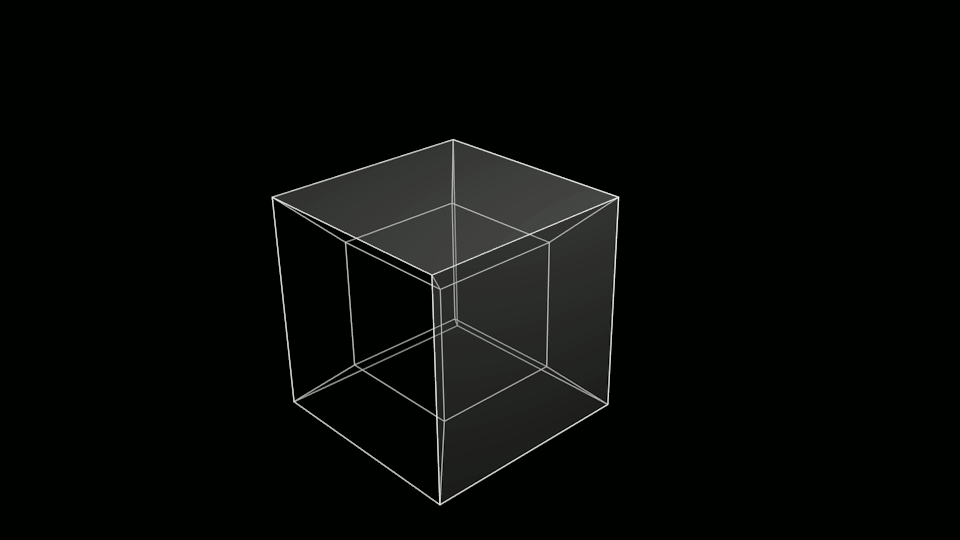

Tesseract is an optical character recognition engine for various operating systems.[3]
It is free software, released under the Apache License, Version 2.0,[1][4][5] and development has been sponsored by Google since 2006.[6]
In 2006, Tesseract was considered one of the most accurate open-source OCR engines then available
History
The Tesseract engine was originally developed as proprietary software at Hewlett Packard labs in Bristol, England and Greeley, Colorado between 1985 and 1994, with some more changes made in 1996 to port to Windows, and some migration from C to C++ in 1998. A lot of the code was written in C, and then some more was written in C++. Since then all the code has been converted to at least compile with a C++ compiler.[4] Very little work was done in the following decade. It was then released as open source in 2005 by Hewlett Packard and the University of Nevada, Las Vegas (UNLV). Tesseract development has been sponsored by Google since 2006.[8]
Features
Tesseract was in the top three OCR engines in terms of character accuracy in 1995.[9] It is available for Linux, Windows and Mac OS X. However, due to limited resources it is only rigorously tested by developers under Windows and Ubuntu.[4][5]

Tesseract